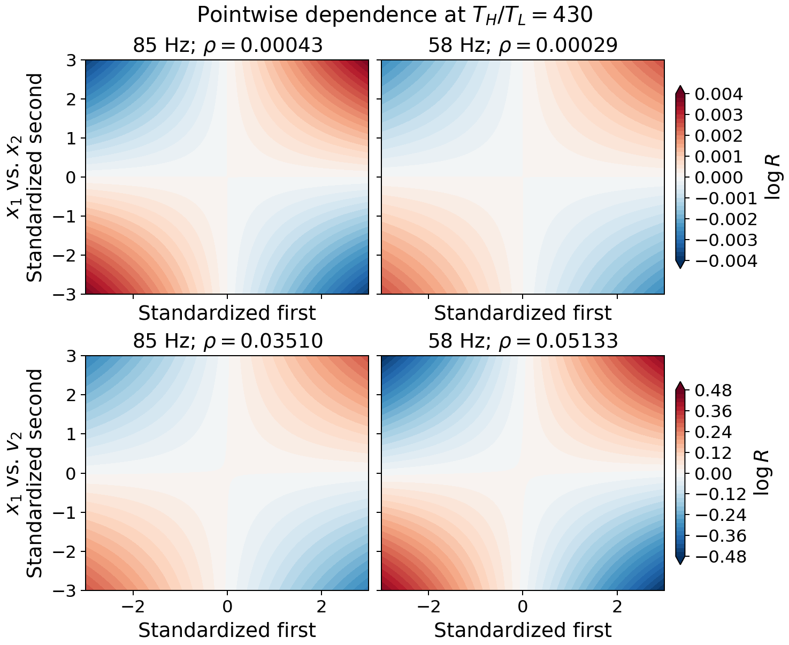
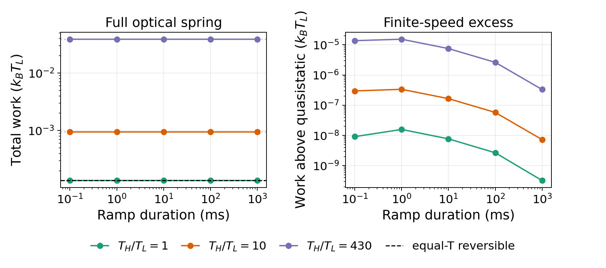

The Work of Reducing Dependence
September 2026
Abstract
How much work does it take to reduce dependence between two systems? We measure dependence with \(R=p_{12}/(p_1p_2)\), the joint density divided by its marginal product, and \(I=\langle\log R\rangle\). In a simple equilibrium oscillator model, a slow reduction \(\Delta I\) costs exactly \(k_BT\Delta I\). We then study two cavity-coupled membranes. Their optical spring changes each oscillator’s stiffness, and unequal baths sustain heat flow, so work must be calculated from the control protocol. Lowering coupling reduces position dependence but increases dependence between the full oscillator states; the modeled ramps require positive work. Published data check the coupling and heat-flow scales. Testing the predicted dependence change and work together requires synchronized joint motion and a calibrated coupling ramp.
From a mathematical dependence change to an experimental test
Define the dependence change
Let \(x\) and \(y\) denote simultaneous position measurements of two oscillators. Write \(p(x,y)\) for their joint probability density and \(p_1(x)\) and \(p_2(y)\) for its marginals. Their pointwise dependence ratio \(R\) and mutual information \(I\) are \[R(x,y)=\frac{p(x,y)}{p_1(x)p_2(y)},\qquad I=\langle\log R\rangle =\iint p(x,y)\log R(x,y)\,dx\,dy . \] The brackets average over \(p(x,y)\). Independence gives \(R=1\) and \(I=0\); when the positions are dependent, \(R\) can lie on either side of one. The mean log ratio \(I\) summarizes the dependence in nats, while \(R\) shows where it changes.
For the same observables before and after control, set \(\Delta I=I_{\rm before}-I_{\rm after}\). Positive \(\Delta I\) means less dependence. We ask what work \(W_{\rm on}\) produces this change, with positive work supplied to the system. Work also depends on the Hamiltonian, baths, and control path.
Calculate the equilibrium work
First vary the coupling \(g\) between two classical oscillators in one bath at temperature \(T\). Each oscillator has stiffness \(k>0\); the potential is \[V_\times(x,y)=\frac{k}{2}(x^2+y^2)+gxy,\qquad q=g/k,\quad |q|<1 . \] The ratio \(q=g/k\) is dimensionless, and \(|q|<1\) makes the potential stable. With \(k_B\) denoting Boltzmann’s constant, the position covariance is \(k_BT\left(\begin{smallmatrix}k&g\\g&k\end{smallmatrix}\right)^{-1}\). Its correlation coefficient is \(\rho=-q\), giving \[\rho=-q,\qquad I(q)=-\frac12\log(1-q^2),\qquad W_{\rm rev}=k_BT[I(q_{\rm before})-I(q_{\rm after})]. \] For slow isothermal control, reversible work \(W_{\rm rev}\) equals the free-energy change. Here \(F(q)-F(0)=(k_BT/2)\log(1-q^2)=-k_BT I(q)\) (Appendix A). Thus lowering \(|q|\) reduces \(I\) and costs \(k_BT\Delta I\). The equality belongs to this Hamiltonian and bath.
Yang et al. report membranes with \(\omega_0/2\pi=400\) kHz and tunable cavity coupling rate \(\Lambda\).[1] Their mode splitting maps to \(|q|\simeq2|\Lambda|/\omega_0\) in the cross-coupling model. For \(|\Lambda|/2\pi\) falling from 85 to 58 Hz, that equal-temperature model gives \(\Delta I=4.83\times10^{-8}\) nats and \(W_{\rm rev}=2.00\times10^{-28}\) J at 300 K. This benchmark uses the experimental coupling scale, not the membrane’s actual work cost.
Dependence and work in membranes
For the same coupling change, the actual membranes have a different work cost. One membrane has added noise and the other a room-temperature bath, so heat flows between them.[1] The cavity changes both their coupling and their individual stiffnesses. With effective mass \(m\), positions \(x_i\), and momenta \(P_i=m\dot x_i\), a Hamiltonian consistent with the measured mode splitting to first order in \(|\Lambda|/\omega_0\) is \[H_{\rm opt}=\frac{P_1^2+P_2^2}{2m} +\frac{m\omega_0^2}{2}(x_1^2+x_2^2) +m\omega_0\Lambda(x_1+x_2)^2 . \] With \(h=2\Lambda/\omega_0\), the stiffness matrix is \(m\omega_0^2\left(\begin{smallmatrix}1+h&h\\h&1+h\end{smallmatrix}\right)\) and the mode frequencies are \(\omega_0\) and \(\omega_0\sqrt{1+2h}\). At equal temperature the optical-spring free energy changes by \[F_{\rm opt}(h)-F_{\rm opt}(0)=\frac{k_BT}{2}\log(1+2h). \] For a slow 85 to 58 Hz change, this gives \(5.60\times10^{-25}\) J at 300 K, about 2800 times the cross-only benchmark. The local stiffness shift contributes to work at first order in \(h\); position dependence changes at second order (Appendix A).
With two baths we evaluate Eq. (1) for positions \((x_1,x_2)\), giving \(R_{\rm pos}\) and \(I_{\rm pos}=\langle\log R_{\rm pos}\rangle\), and for full states \(\boldsymbol{\xi}_i=(x_i,\dot x_i)\), giving \(R_{\rm ph}\) and \(I_{\rm ph}=\langle\log R_{\rm ph}\rangle\). Each average uses the corresponding joint distribution. The full-state measure includes correlations associated with heat flow. For resonant modes, weak optical-spring shifts, and independent Gaussian bath forces, a rotating-wave calculation relates it to heat current \(J\) and effective mode temperatures \(T_i^{\rm eff}\): \[I_{\rm ph}=-\log(1-r_J^2),\qquad r_J=\frac{|J|}{2|\Lambda|k_B\sqrt{T_1^{\rm eff}T_2^{\rm eff}}}. \] Here \(r_J\) is a normalized cross-correlation and \(T_i^{\rm eff}\) comes from each mode’s steady-state variance. A measured joint covariance would give \(R_{\rm ph}\) and \(I_{\rm ph}\) directly (Appendix B).
Let \(T_H\) and \(T_L\) be the hot- and cold-bath temperatures for oscillators 1 and 2. For \(T_H/T_L=430\), near the published hot-bath level, the full Langevin covariance model predicts
| Predicted quantity | 85 Hz | 58 Hz |
|---|---|---|
| \(I_{\rm pos}\) (nats) | \(9.05\times10^{-8}\) | \(4.22\times10^{-8}\) |
| \(I_{\rm ph}\) (nats) | \(0.00123\) | \(0.00264\) |
| Mean heat current (W) | \(4.45\times10^{-17}\) | \(4.44\times10^{-17}\) |
Hence \(\Delta I_{\rm pos}=4.83\times10^{-8}\) nats, while \(\Delta I_{\rm ph}=-1.41\times10^{-3}\) nats. Lower coupling reduces position dependence but increases full-state dependence: the heat-flow-related position–velocity correlation grows relative to each mode’s fluctuations. The observed variables determine what “less dependent” means.


Figure 1 shows how the pointwise ratios change. Its lower row is a position–velocity marginal, one contribution to \(I_{\rm ph}\). The colors share a scale within each row; neither ratio changes uniformly at every point. \(I\) summarizes its average log.
To find the work for that coupling change, we differentiate Eq. (4) with respect to \(\Lambda\): \[W_{\rm on}=m\omega_0\int \dot\Lambda(t) \left\langle[x_1(t)+x_2(t)]^2\right\rangle dt . \] Here \(\dot\Lambda=d\Lambda/dt\); the average must be known throughout the ramp. Evolving the covariance for 0.1 ms to 1 s ramps from the 85 Hz steady state gives positive mechanical work for each ramp (Appendix C). At \(T_H/T_L=430\) and \(T_L=300\) K, the 1 s ramp costs \(1.60\times10^{-22}\) J. This is work on the effective mechanical Hamiltonian; laser power and the heat needed to sustain two baths are outside it. Figure 2 shows total work and its smaller dependence on ramp speed.


The covariance gives \(\Delta I\) from the initial and final states and \(W_{\rm on}\) from the path between them. The table compares relaxed steady states; a finite ramp may end earlier. A work comparison must use the same endpoint convention for dependence.
Test dependence and work
Existing measurements support the coupling scale \(2|\Lambda|\) and give a mean heat flux near \(4\times10^{-17}\) W; the model predicts \(4.46\times10^{-17}\) W at the chosen bath ratio.[1] The temperature trends agree qualitatively, though the reported high-power temperatures appear below the model’s \(\simeq287\,T_L\) prediction. These are checks of scale, not a dependence-and-work test.
The needed test records both membranes’ joint motion before, during, and after a calibrated coupling ramp. From those data one can reconstruct \(R_{\rm pos}\), \(R_{\rm ph}\), and their average logs, then compare the dependence change and work with Eqs. (13), (6), and (7). The published article does not report these paired measurements; data and code are available from the authors on request.[1] This would test the membrane model, while the exact equality in Eq. (3) requires its equilibrium assumptions.
Conclusion
We defined a dependence change by \(\Delta I\) and asked what work produces it. For two equilibrium oscillators with controlled cross-coupling, the answer is exactly \(W_{\rm rev}=k_BT\Delta I\). For the membranes, the answer depends on which variables are observed: reducing coupling lowers position dependence but raises full-state dependence at the steady endpoints. Their optical spring and two baths also make work depend on the path; each modeled ramp requires positive mechanical work.
The experimental test is to measure the joint state and work during the same coupling protocol, with a specified endpoint. Published data constrain the coupling and heat flow but do not yet provide that paired measurement. It would test the membrane predictions; the exact equilibrium relation applies to the simpler model under its stated conditions.
Reproducibility.
optical_spring_sweep.py generates the ramp data and figures; extensions_calculations.py gives the equilibrium and steady-state values. The method is detailed below and in the experimental Supplementary Information.[2]
Appendix
Equilibrium calculations
For Eq. (2), the stiffness and position covariance matrices are \[K_\times=k\begin{pmatrix}1&q\\q&1\end{pmatrix},\qquad C_\times=k_BT K_\times^{-1} =\frac{k_BT}{k(1-q^2)} \begin{pmatrix}1&-q\\-q&1\end{pmatrix}.\] The kinetic partition function is independent of \(q\), whereas the position partition function is proportional to \((\det K_\times)^{-1/2}\). Hence \(F_\times(q)-F_\times(0)=(k_BT/2)\log(1-q^2)=-k_BT I(q)\), proving Eq. (3).
For any zero-mean Gaussian pair standardized to unit variance, with correlation coefficient \(\rho\), the pointwise ratio is \[\log R_\rho(a,b)=-\frac12\log(1-\rho^2) +\frac{\rho ab-\frac12\rho^2(a^2+b^2)}{1-\rho^2}. \] This is the function shown in Fig. 1; averaging it over the joint Gaussian gives \(I=-\frac12\log(1-\rho^2)\). Its sign can change across \((a,b)\) even when \(I>0\).
For Eq. (4), let \(h=2\Lambda/\omega_0\). Then \(K_{\rm opt}=m\omega_0^2\left(\begin{smallmatrix}1+h&h\\h&1+h\end{smallmatrix}\right)\), with determinant \((m\omega_0^2)^2(1+2h)\). Its equilibrium position correlation is \(\rho_{\rm pos}=-h/(1+h)\), so \[F_{\rm opt}(h)-F_{\rm opt}(0)=\frac{k_BT}{2}\log(1+2h),\quad I_{\rm pos}(h)=-\frac12\log\left[1-\left(\frac{h}{1+h}\right)^2\right].\] For small \(|h|\), the work change is first order in the change of \(h\), while \(I_{\rm pos}=h^2/2+O(h^3)\). This explains why the optical-spring work cannot be inferred from Eq. (3).
Steady-state covariance
The experiment’s resonant effective-mode equation has a coupling \(\Lambda\) both on and off its diagonal.[1] In the rotating-wave approximation, let \(b_i\) be the complex amplitude of mode \(i\) and \(\gamma_i\) its damping rate. With \(T_1=T_H\), \(T_2=T_L\), and \(\hbar\) the reduced Planck constant, define the bath occupations \(n_i=k_BT_i/(\hbar\omega_0)\), the steady occupations \(N_{ii}=\langle|b_i|^2\rangle\), and \(s=\operatorname{Im}\langle b_1b_2^*\rangle\). The steady solution is \[\begin{aligned} s&=\frac{2\Lambda\gamma_1\gamma_2(n_1-n_2)} {(\gamma_1+\gamma_2)(\gamma_1\gamma_2+4\Lambda^2)},\nonumber\\ N_{11}&=n_1-\frac{2\Lambda s}{\gamma_1},\qquad N_{22}=n_2+\frac{2\Lambda s}{\gamma_2},\qquad J=2\hbar\omega_0\Lambda s . \end{aligned}\] The real cross-correlation vanishes at exact resonance. The effective mode temperatures satisfy \(k_BT_i^{\rm eff}=\hbar\omega_0N_{ii}\), so writing \(r_J=|s|/\sqrt{N_{11}N_{22}}\) gives Eq. (6). The phase-space mutual information is \(-\log(1-r_J^2)\) because the two quadrature pairs have the same correlation magnitude.
For the numerical calculations we retain the full position and velocity dynamics. In dimensionless coordinates \(z=(u_1,v_1,u_2,v_2)\), with \(u_i=\omega_0x_i/\sqrt{k_BT_L/m}\) and \(v_i=\dot x_i/\sqrt{k_BT_L/m}\), the covariance \(C=\langle zz^{\mathsf T}\rangle\) satisfies a linear equation with drift matrix \(A\) and diffusion matrix \(D\): \[\dot C=A(h)C+CA(h)^{\mathsf T}+D,\quad A(h)=\begin{pmatrix} 0&\omega_0&0&0\\ -\omega_0(1+h)&-\gamma_1&-\omega_0h&0\\ 0&0&0&\omega_0\\ -\omega_0h&0&-\omega_0(1+h)&-\gamma_2 \end{pmatrix},\quad D=\operatorname{diag}(0,2\gamma_1T_H/T_L,0,2\gamma_2). \] The steady state solves \(AC+CA^{\mathsf T}+D=0\). Partition \(C\) into the two oscillator blocks \(C_1,C_2\). Gaussian integration then gives \[I_{\rm ph}=\frac12\log\frac{\det C_1\det C_2}{\det C},\quad \log R_{\rm ph}(z)=I_{\rm ph} -\frac12z^{\mathsf T} \left[C^{-1}-\operatorname{diag}(C_1^{-1},C_2^{-1})\right]z . \] The same formulas applied to the \(2\times2\) position submatrix give \(I_{\rm pos}\) and \(R_{\rm pos}\). These definitions show why two distributions with different observed variables can have opposite dependence trends.
Finite-time covariance and work
We divide each linear ramp into 400 intervals with constant midpoint \(h\). If \(C_{\rm ss}(h)\) solves the steady Lyapunov equation, one interval of duration \(\delta t\) updates the covariance exactly: \[C(t+\delta t)=C_{\rm ss}(h) +e^{A(h)\delta t}[C(t)-C_{\rm ss}(h)]e^{A(h)^{\mathsf T}\delta t}.\] The work increment follows Eq. (7), or equivalently \[\frac{dW_{\rm on}}{k_BT_L} =\frac12\left\langle(u_1+u_2)^2\right\rangle\,dh .\] The quasistatic reference in Fig. 2 integrates this generalized force with \(C=C_{\rm ss}(h)\) at each \(h\). With unequal baths it is a steady-state path integral, not a free-energy difference. The script records the work and both mutual informations at each ramp endpoint.
References
C. Yang, X. Wei, J. Sheng, and H. Wu, "Phonon heat transport in cavity-mediated optomechanical nanoresonators," Nature Communications 11, 4656 (2020). doi:10.1038/s41467-020-18426-4.
C. Yang et al., Supplementary Information to Nature Communications 11, 4656 (2020), Notes 1 and 2. publisher PDF.